第 7 章 单样本分析
本章节数据和代码来自Seurat官网数据，是10X Genomics 免费提供的外周血单核细胞 (PBMC) 数据。 数据可在此下载。
基本流程如下： 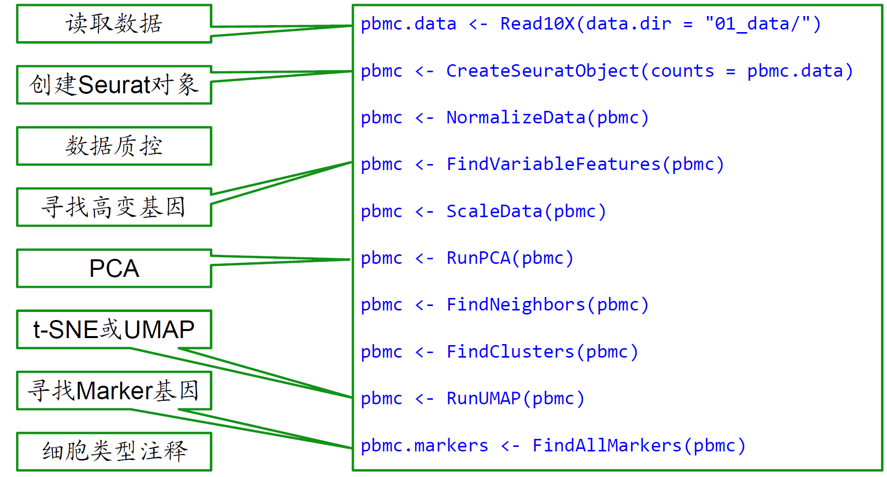
7.1 设置Seurat对象
首先读取数据。Read10X() 函数读取来自 10X 的 cellranger pipline 的输出，返回一个唯一分子标识（UMI）计数矩阵。该矩阵中的值表示在每个单元（即细胞；列）中检测到的每个特征（即基因；行）的分子数量。然后我们使用计数矩阵来创建Seurat对象。该对象充当一个容器，其中包含单细胞数据集的数据（如计数矩阵）和分析（如 PCA 或聚类结果）。
# 加载包
library(dplyr)
library(Seurat)
library(patchwork)
# 读取数据
pbmc.data <- Read10X(data.dir = "data/single_sample/filtered_gene_bc_matrices/hg19/")
# 创建Seurat对象
pbmc <- CreateSeuratObject(counts = pbmc.data,
project = "pbmc3k", #自定义项目名
min.cells = 3, # 每个基因至少在3个细胞中检测到
min.features = 200) # 每个细胞至少检测到200个基因
pbmc
## An object of class Seurat
## 13714 features across 2700 samples within 1 assay
## Active assay: RNA (13714 features, 0 variable features)
## 1 layer present: counts7.2 质量控制
在创建Seurat时 (CreateSeuratObject) 已经完成了基本的质量控制，即每个基因至少在3个细胞中检测到，每个细胞至少检测到200个基因。
但仍然可以根据需要进一步过滤数据。例如高基因计数、高线粒体比例的细胞。
7.2.1 计算每个细胞线粒体基因的百分比
QC指标储存位置
Seurat对象的meta.data中储存了质量控制的指标，他是一个数据框，每一行代表一个细胞，每一列代表一个指标。
# 查看前5行
head(pbmc@meta.data, 5)
## orig.ident nCount_RNA nFeature_RNA percent.mt
## AAACATACAACCAC-1 pbmc3k 2419 779 3.0177759
## AAACATTGAGCTAC-1 pbmc3k 4903 1352 3.7935958
## AAACATTGATCAGC-1 pbmc3k 3147 1129 0.8897363
## AAACCGTGCTTCCG-1 pbmc3k 2639 960 1.7430845
## AAACCGTGTATGCG-1 pbmc3k 980 521 1.2244898
# View(pbmc@meta.data) #或者直接查看其中，前三列指标是我们在创建Seurat对象时候设定的。
第一列orig.ident是原始细胞的标识；
第二列nCount_RNA是每个细胞的RNA分子数；
第三列nFeature_RNA是每个细胞检测到的基因数。
7.4 识别高变基因
识别高变基因通过FindVariableFeatures函数实现。该函数计算每个基因的方差，并根据方差的大小对基因进行排序。我们可以选择一定数量的高变基因用于下游分析。
默认情况下，每个数据集会返回2000个高变基因。
pbmc <- FindVariableFeatures(pbmc, selection.method = "vst", nfeatures = 2000)
# Identify the 10 most highly variable genes
top10 <- head(VariableFeatures(pbmc), 10)
# plot variable features with and without labels
plot1 <- VariableFeaturePlot(pbmc)
plot2 <- LabelPoints(plot = plot1, points = top10, repel = TRUE)
plot1 + plot2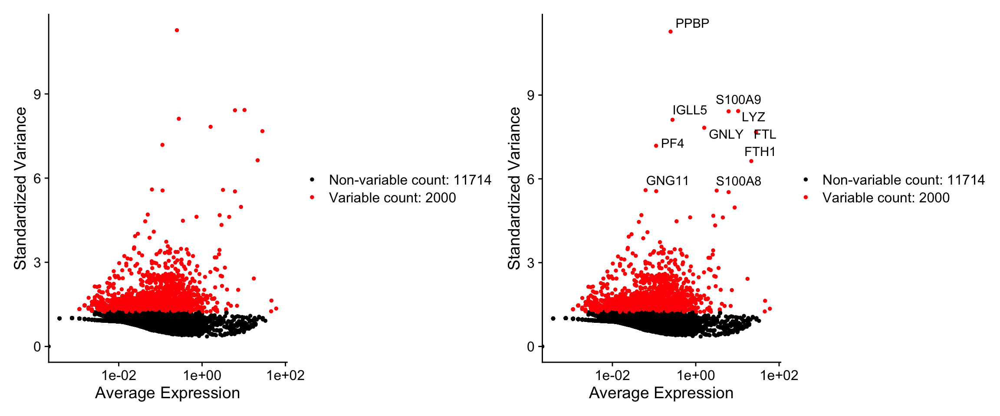
7.5 缩放数据
应用线性变换（“scaling”）缩放数据，这是PCA等降维技术之前的标准预处理步骤，使用ScaleData函数完成这一步。
默认情况下，仅缩放可变基因，但也可以选择缩放所有基因。
缩放后数据储存位置
pbmc[["RNA"]]$scale.data[1:5, 1:3]
## AAACATACAACCAC-1 AAACATTGAGCTAC-1 AAACATTGATCAGC-1
## AL627309.1 -0.05812316 -0.05812316 -0.05812316
## AP006222.2 -0.03357571 -0.03357571 -0.03357571
## RP11-206L10.2 -0.04166819 -0.04166819 -0.04166819
## RP11-206L10.9 -0.03364562 -0.03364562 -0.03364562
## LINC00115 -0.08223981 -0.08223981 -0.08223981如何消除不需要的变异源
在 Seurat 中，ScaleData()函数不仅用于对数据进行缩放（标准化），还可以用于回归掉数据中的不需要的变异来源。这些不需要的变异来源可能包括细胞周期阶段、线粒体污染等。通过回归掉这些变异来源，可以减少它们对下游分析（如聚类、降维等）的影响，从而更好地揭示生物学上有意义的信号。
“回归掉”变异来源是指通过线性回归模型，将这些不需要的变异从基因表达数据中移除。这样做的目的是减少这些变异对数据的影响，使得下游分析更加准确和可靠。
但是对于想使用此功能的，Seurat作者官网中强烈建议在数据标准化步骤走SCTransform()流程，而不是直接使用ScaleData函数。
7.6 PCA 线性降维
PCA 是一种常用的降维技术，用于将高维数据转换为低维数据。在单细胞数据中，PCA通常用于发现数据中的主要变化方向，以便在后续分析中使用。
默认情况下，仅将先前识别的高变基因用于 PCA 输入。PCA 帮助识别数据中变化最大的方向，并将这些方向作为新的坐标轴（主成分），减少数据的维度。
# Examine and visualize PCA results a few different ways
print(pbmc[["pca"]], dims = 1:5, nfeatures = 5)
## PC_ 1
## Positive: CST3, TYROBP, LST1, AIF1, FTL
## Negative: MALAT1, LTB, IL32, IL7R, CD2
## PC_ 2
## Positive: CD79A, MS4A1, TCL1A, HLA-DQA1, HLA-DQB1
## Negative: NKG7, PRF1, CST7, GZMB, GZMA
## PC_ 3
## Positive: HLA-DQA1, CD79A, CD79B, HLA-DQB1, HLA-DPB1
## Negative: PPBP, PF4, SDPR, SPARC, GNG11
## PC_ 4
## Positive: HLA-DQA1, CD79B, CD79A, MS4A1, HLA-DQB1
## Negative: VIM, IL7R, S100A6, IL32, S100A8
## PC_ 5
## Positive: GZMB, NKG7, S100A8, FGFBP2, GNLY
## Negative: LTB, IL7R, CKB, VIM, MS4A7🌟可视化PCA结果
VizDimLoadings 函数可视化前两个主成分（PC1和PC2）上基因的加载值。加载值代表每个基因在主成分上的贡献大小，帮助识别哪些基因在特定主成分上有较大的影响。
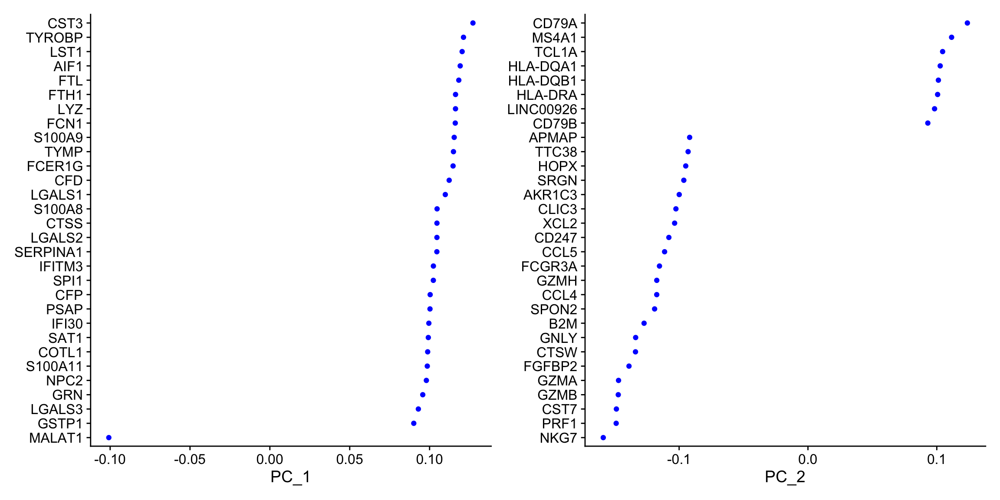

DimHeatmap() 函数用于在主成分分析（PCA）后生成热图，帮助探索数据中的主要异质性来源，并决定哪些主成分（PCs）应包括在后续分析中。热图中的细胞和特征根据它们的 PCA 分数排序，设置 cells 参数为一个数字可以加速大数据集的绘图。尽管这是监督分析，但它是探索相关特征集的有价值工具。
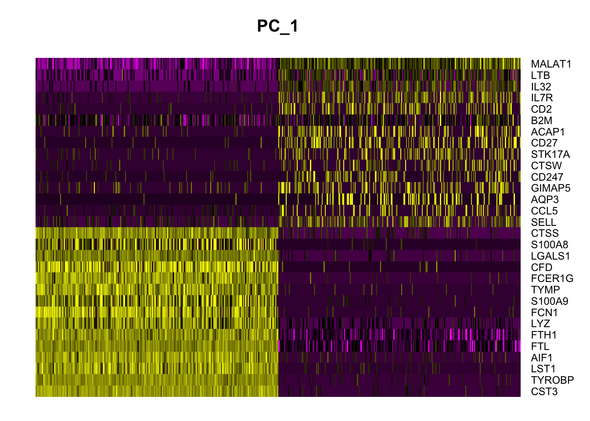
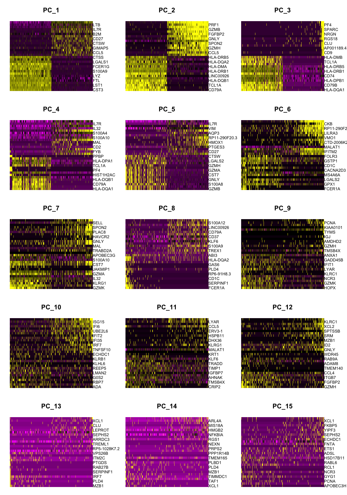7.6.1 确定数据集的“维度”
单个特征的技术噪声在 scRNA-seq 数据中通常很大。为了克服这一问题，Seurat 根据细胞的 PCA 分数进行聚类，每个主成分（PC）实际上代表一个“元特征”，它结合了多个相关特征的信息。因此，前几个主成分代表了数据集的一个稳健压缩。但是面临的一个重要问题是应该选择多少个主成分来包括在分析中，比如 10 个、20 个还是 100 个？
Seurat 作者推荐可以生成一个“肘部图”（Elbow plot），这是一个基于每个主成分所解释的方差百分比的排名。图中通常会出现一个”肘部”，即标准差开始显著下降的点，选择这个点之前的主成分数目通常是合适的。并且建议在选择该参数时宁可偏高。

在这个例子中，可以观察到大约在第 9-10 个主成分处出现一个“肘部”，这表明前 10 个主成分捕捉到了大部分的真实信号。
7.7 细胞聚类
FindNeighbors()函数将先前定义的数据集维度（前 10 个 PC）作为输入。
FindClusters()函数包含一个分辨率参数，用于设置下游聚类的“粒度”，增加的值会导致更多的聚类。此参数设置在 0.4-1.2 之间通常会为大约 3K 细胞的单细胞数据集带来良好的结果。对于较大的数据集，最佳分辨率通常会增加
pbmc <- FindNeighbors(pbmc, dims = 1:10)
pbmc <- FindClusters(pbmc, resolution = 0.5)
## Modularity Optimizer version 1.3.0 by Ludo Waltman and Nees Jan van Eck
##
## Number of nodes: 2638
## Number of edges: 95927
##
## Running Louvain algorithm...
## Maximum modularity in 10 random starts: 0.8728
## Number of communities: 9
## Elapsed time: 0 seconds7.8 非线性降维UMAP/tSNE
Seurat 提供了几种非线性降维技术，例如 tSNE 和 UMAP，用于可视化和探索这些数据集。这些算法的目标是学习数据集中的底层结构，以便在低维空间中将相似的细胞放在一起。因此，在上述基于图的聚类中被分组在一起的细胞应该在这些降维图上共定位。
# note that you can set `label = TRUE` or use the LabelClusters function to help label
# individual clusters
DimPlot(pbmc, reduction = "umap")|
DimPlot(pbmc, reduction = "tsne")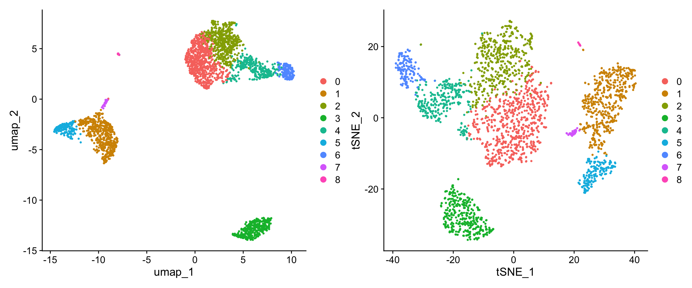
7.9 marker 基因
Seurat 可以通过差异表达（DE）帮助你找到定义聚类的标志物。默认情况下，它会识别一个聚类（在 ident.1中指定）的正负标志物，并将其与所有其他细胞进行比较。FindAllMarkers() 函数可以自动完成所有聚类的这个过程，但你也可以测试聚类组之间的差异，或者将其与所有细胞进行比较。
# find all markers of cluster 2
cluster2.markers <- FindMarkers(pbmc, ident.1 = 2)
head(cluster2.markers, n = 5)
## p_val avg_log2FC pct.1 pct.2 p_val_adj
## IL32 2.892340e-90 1.3070772 0.947 0.465 3.966555e-86
## LTB 1.060121e-86 1.3312674 0.981 0.643 1.453850e-82
## CD3D 8.794641e-71 1.0597620 0.922 0.432 1.206097e-66
## IL7R 3.516098e-68 1.4377848 0.750 0.326 4.821977e-64
## LDHB 1.642480e-67 0.9911924 0.954 0.614 2.252497e-63# find all markers distinguishing cluster 5 from clusters 0 and 3
cluster5.markers <- FindMarkers(pbmc, ident.1 = 5, ident.2 = c(0, 3))
head(cluster5.markers, n = 5)
## p_val avg_log2FC pct.1 pct.2 p_val_adj
## FCGR3A 8.246578e-205 6.794969 0.975 0.040 1.130936e-200
## IFITM3 1.677613e-195 6.192558 0.975 0.049 2.300678e-191
## CFD 2.401156e-193 6.015172 0.938 0.038 3.292945e-189
## CD68 2.900384e-191 5.530330 0.926 0.035 3.977587e-187
## RP11-290F20.3 2.513244e-186 6.297999 0.840 0.017 3.446663e-182# find markers for every cluster compared to all remaining cells, report only the positive
# ones
pbmc.markers <- FindAllMarkers(pbmc, only.pos = TRUE)
pbmc.markers %>%
group_by(cluster) %>%
dplyr::filter(avg_log2FC > 1)
## # A tibble: 7,019 × 7
## # Groups: cluster [9]
## p_val avg_log2FC pct.1 pct.2 p_val_adj cluster gene
## <dbl> <dbl> <dbl> <dbl> <dbl> <fct> <chr>
## 1 3.75e-112 1.21 0.912 0.592 5.14e-108 0 LDHB
## 2 9.57e- 88 2.40 0.447 0.108 1.31e- 83 0 CCR7
## 3 1.15e- 76 1.06 0.845 0.406 1.58e- 72 0 CD3D
## 4 1.12e- 54 1.04 0.731 0.4 1.54e- 50 0 CD3E
## 5 1.35e- 51 2.14 0.342 0.103 1.86e- 47 0 LEF1
## 6 1.94e- 47 1.20 0.629 0.359 2.66e- 43 0 NOSIP
## 7 2.81e- 44 1.53 0.443 0.185 3.85e- 40 0 PIK3IP1
## 8 6.27e- 43 1.99 0.33 0.112 8.60e- 39 0 PRKCQ-AS1
## 9 1.16e- 40 2.70 0.2 0.04 1.59e- 36 0 FHIT
## 10 1.34e- 34 1.96 0.268 0.087 1.84e- 30 0 MAL
## # ℹ 7,009 more rowsSeurat 有几种用于差异表达分析的测试方法，可以通过 test.use 参数进行设置。例如，ROC测试会返回任何单个标志物的“分类能力”（范围从0表示随机，到1表示完美）。
cluster0.markers <- FindMarkers(pbmc, ident.1 = 0, logfc.threshold = 0.25, test.use = "roc", only.pos = TRUE)🌟可视化marker基因
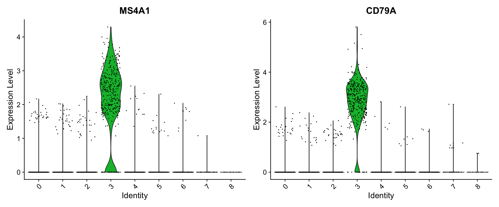
# you can plot raw counts as well
VlnPlot(pbmc, features = c("NKG7", "PF4"), slot = "counts", log = TRUE)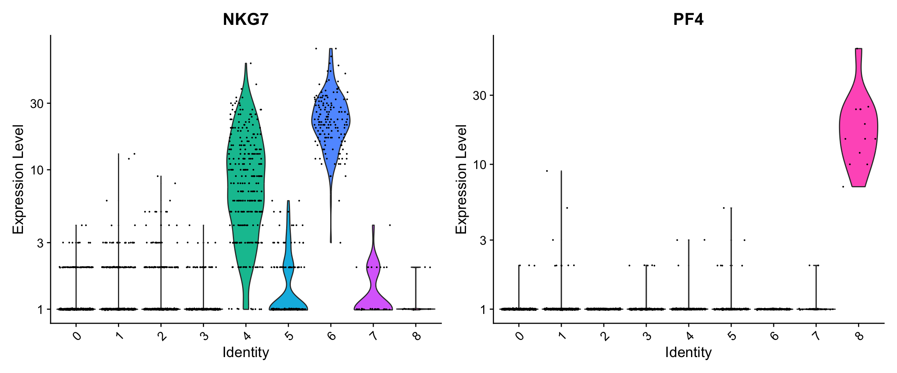
FeaturePlot(pbmc, features = c("MS4A1", "GNLY", "CD3E", "CD14", "FCER1A", "FCGR3A", "LYZ", "PPBP", "CD8A"))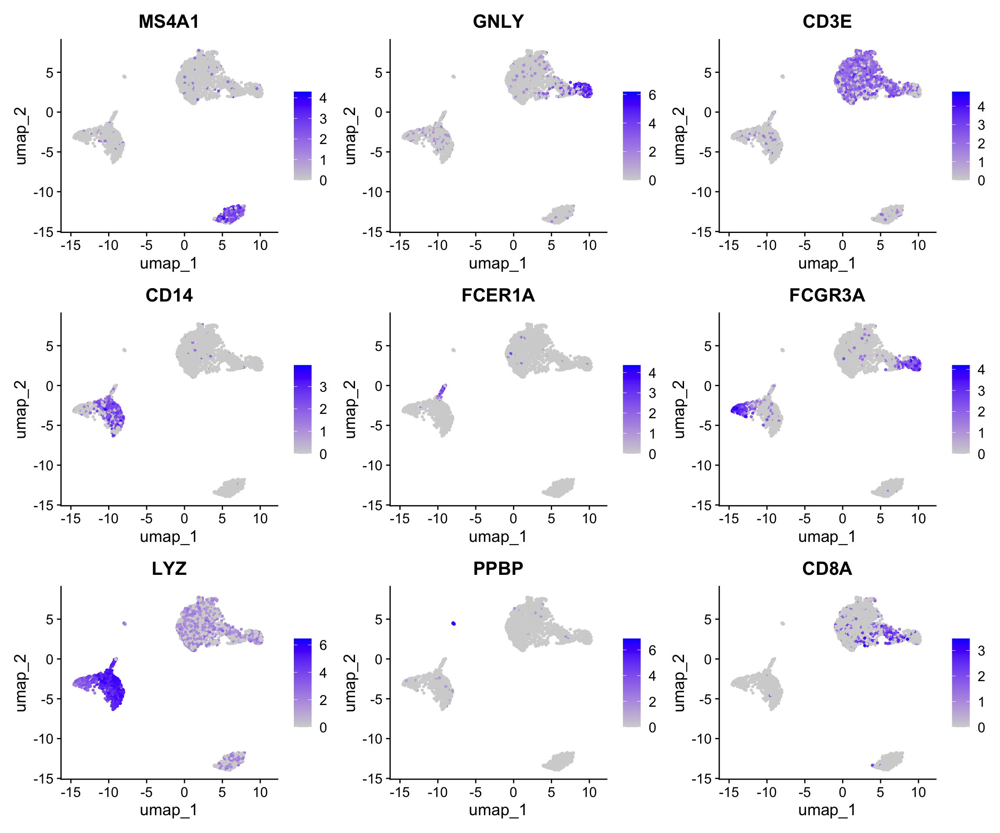
DoHeatmap() 函数为给定的细胞和特征生成一个表达热图。在这种情况下，我们绘制了每个簇的前10个标志物（如果标志物少于20个，则绘制所有标志物）。
pbmc.markers %>%
group_by(cluster) %>% # 按簇（cluster）分组
dplyr::filter(avg_log2FC > 1) %>% # 筛选出平均对数2倍变化（avg_log2FC）大于1的基因。
slice_head(n = 10) %>% # 保留每个簇的前10个基因
ungroup() -> top10 # 解除分组，并将结果存储到`top10`变量中
DoHeatmap(pbmc, features = top10$gene) + NoLegend() 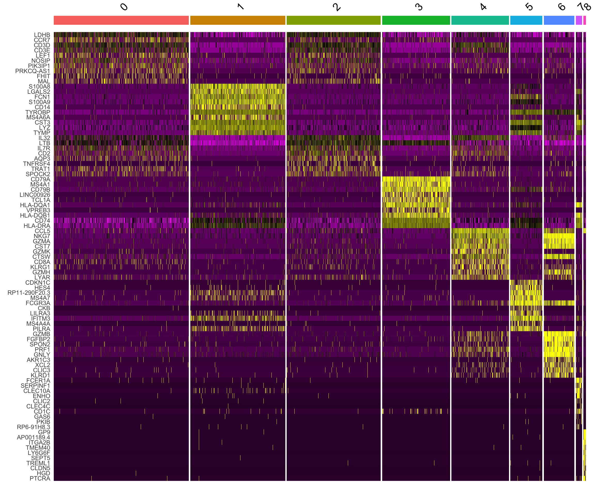
pbmc.markers %>%
group_by(cluster) %>% # 按簇（cluster）分组
dplyr::filter(avg_log2FC > 1) %>% # 筛选出平均对数2倍变化（avg_log2FC）大于1的基因。
slice_head(n = 10) %>% # 保留每个簇的前10个基因
ungroup() -> top10 # 解除分组，并将结果存储到`top10`变量中
RidgePlot(pbmc, features = top10$gene[1:6])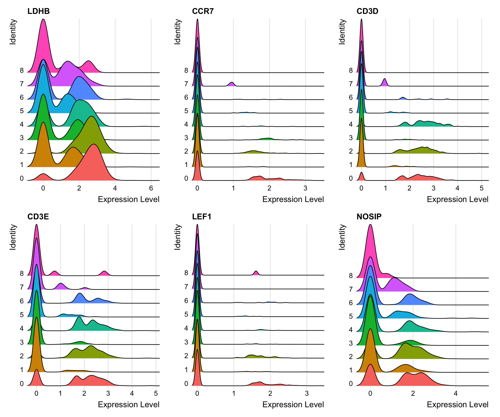